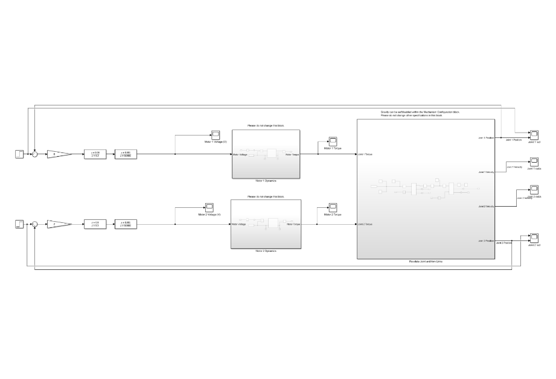
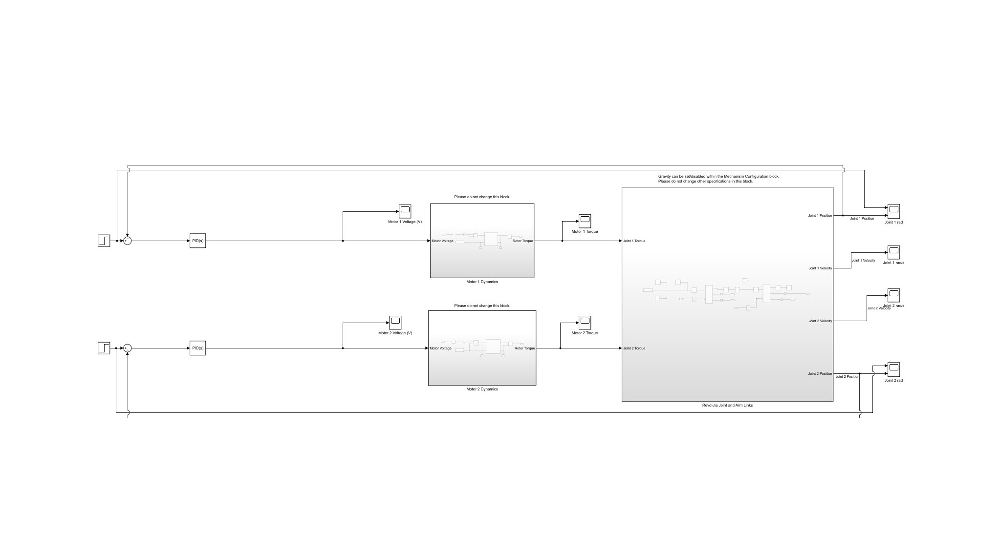

This project is a position controller for a 2-link robotic arm, made in a 3-member team. My role was primarily focused on the theoretical aspect of the controller and assisting Simulink testing. This controller was modelled in MATLAB and Simulink, with 2 versions made. One was a PID controller, and the other was a P controller with lead-lag compensators. All values were found by hand, and a comprehensive report detailing the full design process and observations was additionally written.

Simulink Block Model (Lead-Lag)

Simulink Block Model (Lead-Lag)
Video of the PID Robot Arm Simulator
The hardest part of the project was the derivation of the gain constants. Overall, 6 iterations were required, with the last 3 iterations in particular proving a challenge. The 4th iteration required a pole to be flipped in lead compensator, as it proved too fragile. The 5th iteration took more time to figure out, however it was determined that the values would need to be recalculated with the flipped lead. Finally, the 6th iteration found new overall gains from the changes. With this new lead-lag compensator, it was then easily converted to the desired PID form.
This project taught me a lot about PID controllers in general, especailly their design and practical applications. The main lesson I learned was that theory does not exactly match reality, in this case the derivations of the controller looked correct, but upon testing it was disovered that it didn't work. When possible, simulations should be used to verify results, especially before applying systems to physical hardware.
You're a slave to history; even after Calamity, you fight against the only order that can guarantee the safety of your people. You, solely, are responsible for this.